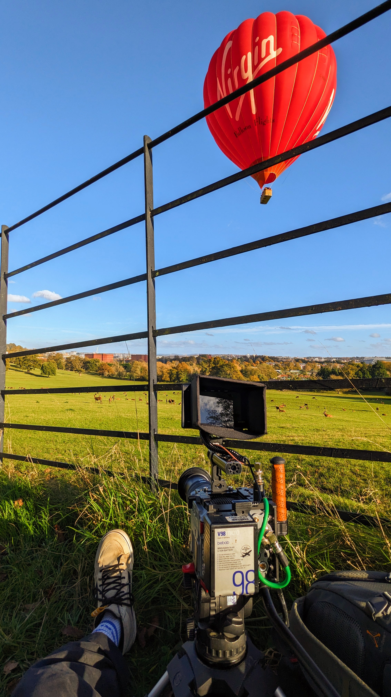
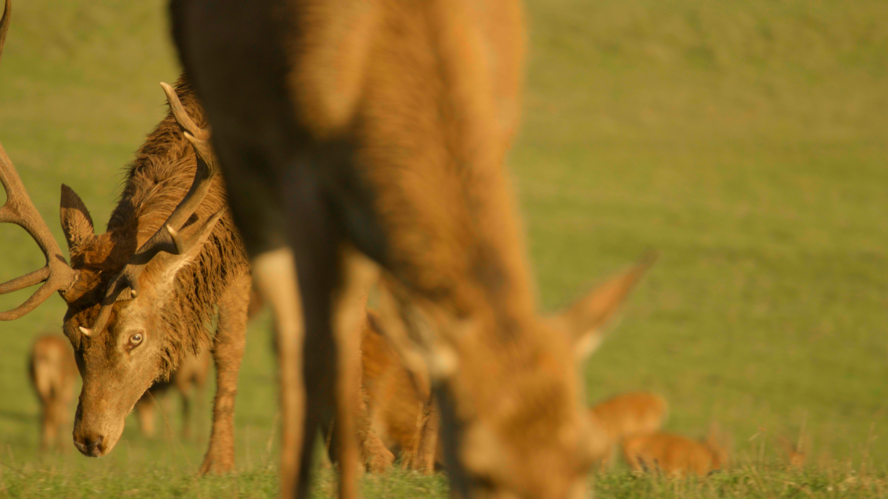

Red Deer
Ashton Court
Situated on the South Side of Ashton Court, The Deer Park has been home to Red Deer for over 600 years.
On a clear afternoon in late October, I brought a RED Raptor S35 and Canon RF 100-400mm to the park to try and capture them. October marks the beginning of the Deer's mating period leading to the more aggressive behavior seen from the Stags in the video.

